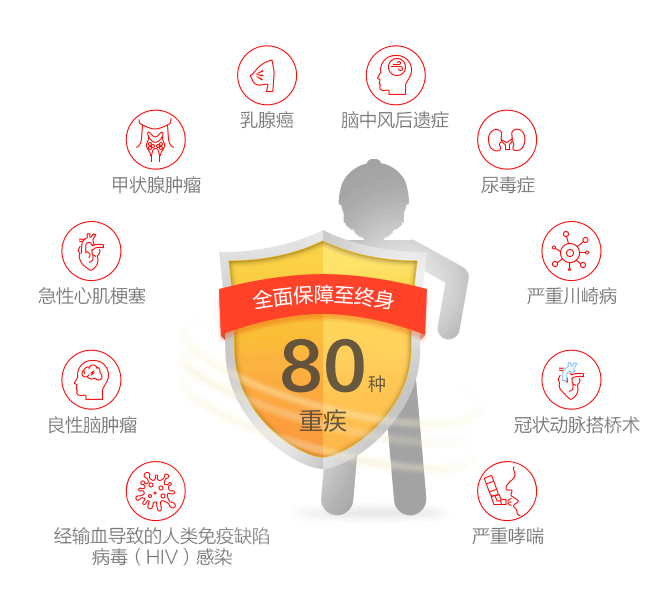

投保年龄
出生满28天-55周岁
保险期限
终身
缴费方式
5年10年、15年20年期交或趸交
产品特色
-
80种重疾全面保障至终身

一经确诊，立即赔付，无需事后报销
一经赔付，合同终止
-
38种轻症全面保障
不占重疾保额，不影响重疾赔付
轻症赔付5次为限，同种轻症1次为限，每次尊享基本保额的20%
-
全
-
免
身故、全残、疾病终末期全面保
100%赔付，可靠！
豁免保险费更显关爱
被保险人若在等待期后初次罹患轻症，则豁免后续保费案例
| 安先生（33岁），购买了安邦长青树重大疾病保险，保额35万元，每年交费8806元，交费期间20年，保障至终身。 | |
生病情况因饮食习惯偏好，40岁时罹患高血脂症，同时因出现短暂视力障碍及头晕症状，就医后经诊断为轻微脑中风。确诊初次罹患轻症疾病，安先生很快获得了7万元的理赔金，并豁免了后续所有未交清保费，重大疾病保障仍有效。不久后，安先生突感上腹疼痛、胸闷憋气，就医后确诊为急性心肌梗塞。 |
|
赔付情况庆幸自己当初购买了安邦长青树重大疾病保险，在确诊后的第7天，安先生就拿到了35万元的重疾赔付金，用这笔钱即时交纳了前期治疗费用，同时弥补了现阶段因无法工作导致的家庭收入损失。安先生治病期间，家庭经济水平未受到影响，经过半年的治疗，安先生已基本康复。 |
|
产品报备名称：安邦长青树重大疾病保险
批复文号：安邦人寿发【2016】289号
备案编号：安邦人寿【2016】疾病保险31号
风险提示：本资料仅供客户理解产品条款所用，有关产品的说明、解释、承诺或保证，如与产品条款不一致，均以产品条款为准。
购买流程
-
填写投保信息
-
确认信息
-
支付保费
-
投保完成
理赔流程
- 拨打95569申请理赔
- 协助您递交理赔申请
- 等待公司做核定
- 查收理赔金
常见问题
- Q：投保成功后，如何查询保单？
- A：（1）进入安邦金融app首页-保单查询；
（2）关注安邦保险微信公众号-微服务-我的保单；
（3）关注安邦人寿微信公众号---我的安邦---我的保单---保单查询，或：邦保单---我的保单---保单查询；
（4）您可以拨打95569电话查询保单。
- Q：哪些地区可以投保？
- A：本产品由安邦人寿保险股份有限公司承保，在北京、上海、广东、深圳、浙江、江苏、天津、河北、河南、山东、吉林、黑龙江、辽宁、湖南、湖北、四川、江西、山西、安徽设有分公司。
- Q：本产品的等待期是多少天？
- A：此产品的等待期：被保险人在本主险合同生效（或最后复效）之日起90 天内经医院专科医生确诊初次罹患本主险合同所约定的重大疾病、达到疾病终末期阶段的，或因意外伤害以外的原因导致全残、身故的，本公司将无息返还您所交的本主险合同的保险费，本主险合同终止。这90 天的时间称为等待期。被保险人因意外伤害导致本主险合同所约定的重大疾病、身故、全残、达到疾病终末期阶段的，无等待期限制。
- Q：本保险产品的责任免除条款是什么？
- A：因下列情形之一，导致被保险人身故、全残、达到疾病终末期阶段或初次诊断罹患本主险合同定义的轻症疾病重大疾病的，本公司不承担给付各项保险金的责任：
（1） 投保人对被保险人的故意杀害、故意伤害；
（2） 被保险人故意犯罪或者抗拒依法采取的刑事强制措施；
（3） 被保险人故意主动吸食或注射毒品；
（4） 被保险人自本主险合同成立或合同效力恢复之日起 2 年内自杀或自伤，但被保险人自杀或自伤时为无民事行为能力人的除外；
（5） 被保险人酒后驾驶，无合法有效驾驶证驾驶或驾驶无有效行驶证的机动车；
（6） 战争、军事冲突、暴乱或武装叛乱；
（7） 核爆炸、核辐射或核污染；
（8） 遗传性疾病，先天性畸形、变形或染色体异常；
（9） 感染艾滋病病毒或患艾滋病，但本主险合同所列因职业关系导致的人类免疫缺陷病毒（HIV）感染、经输血导致的人类免疫缺陷病毒（HIV）感染重大疾病除外。
发生上述第（1）项情形导致被保险人身故、全残、进入疾病终末期阶段或患本主险合同定义的轻症疾病、重大疾病的，本主险合同终止，您已交足 2 年以上保险费的，本公司向其他权利人退还本主险合同的现金价值。
发生上述第（2）项情形导致被保险人身故、全残、进入疾病终末期阶段或患本主险合同定义的轻症疾病、重大疾病的，本主险合同终止，您已交足 2 年以上保险费的，本公司向您退还本主险合同的现金价值。
发生上述其他项情形导致被保险人身故、全残、进入疾病终末期阶段或患本主险合同定义的轻症疾病、重大疾病的，本主险合同终止，本公司向您退还本主险合同的现金价值。
- Q：犹豫期及解除合同（退保）
- A：为了使您充分了解保险合同的保障范围，确定选择了合适的保险金额、交费期限和交费金额，自您签收保险合同次日零时起（我公司电子保单发送日为您的签收日期），有20个自然日的犹豫期。如果您在此期间提出解除保险合同（即退保），需要填写书面申请书，并提供您的有效身份证件，本公司会无息退还您所交的保险费。
自本公司收到您解除保险合同的书面申请时起，保险合同即被解除。对保险合同解除前发生的保险事故本公司不承担保险责任。
您在犹豫期后申请解除保险合同，请填写解除合同申请书并向本公司提供您的有效身份证件。自本公司收到解除合同申请书时起，保险合同终止。本公司自收到解除合同申请书之日起30日内向您退还本保险合同的现金价值。
您在犹豫期后解除合同会遭受一定损失，合同解除后，本公司不承担任何保险责任。
- Q：投保人和被保险人必须是同一人吗？
- A：被保险人年龄大于等于18周岁，投保人和被保险人必须为同一人；被保险人年龄小于18周岁，投保人必须为被保险人父母。
- Q：电子保单跟纸质保单有区别吗？
- A：安邦金融上销售的本款保险采用电子保单，法律效力等同于纸质保单。可拨打安邦保险客服电话95569验真、核实。
- Q：如何理赔？
- A：出险后，请立刻拨打安邦保险客服电话95569报案，申请理赔。